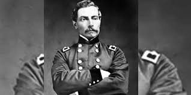
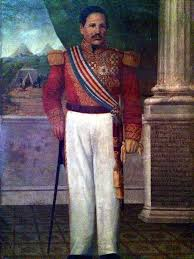

Independencia de Guatemala
La independencia de Guatemala, lograda el 15 de septiembre de 1821, marcó un hito en la historia de Centroamérica. Fue el resultado de una serie de cambios políticos y sociales que sacudieron a las colonias españolas en América, influidos por las ideas de la Ilustración, las revoluciones en Estados Unidos y Francia, y las guerras de independencia en Sudamérica. Este acontecimiento no solo dio fin a más de 300 años de dominio colonial español, sino que también inauguró un complejo proceso de construcción nacional.
Contexto Histórico
A principios del siglo XIX, las colonias en América comenzaron a cuestionar el poder de la monarquía española, influenciadas por las ideas liberales y revolucionarias de Europa y América. Las tensiones en Guatemala aumentaron debido al debilitamiento del imperio español y los movimientos independentistas que surgieron en México y el sur del continente.
La Proclamación de Independencia
El 15 de septiembre de 1821, los representantes de las provincias centroamericanas se reunieron en la ciudad de Guatemala para firmar el acta de independencia. Este documento declaraba la separación de España y fue aceptado por gran parte de la élite criolla sin enfrentamientos armados, a diferencia de lo que sucedió en otros países de América Latina.
Unión al Imperio Mexicano y Disolución
Tras la proclamación, Guatemala y las otras provincias centroamericanas optaron por unirse brevemente al Imperio Mexicano de Agustín de Iturbide. Sin embargo, esta unión duró poco tiempo, y en 1823 las provincias se reorganizaron como las Provincias Unidas de Centroamérica, un experimento que duró hasta 1839.
Legado de la Independencia
a independencia de Guatemala marcó el inicio de un proceso de construcción nacional lleno de retos políticos y sociales. A pesar de las dificultades, este evento sigue siendo un símbolo de soberanía y libertad, conmemorándose cada año el 15 de septiembre como un día de orgullo patrio.
Personajes historicos
La independencia de Guatemala, proclamada el 15 de septiembre de 1821, marcó un hito crucial en la historia del país y de Centroamérica. Este proceso no fue un acontecimiento aislado, sino el resultado de una serie de movimientos sociales, políticos y militares que involucraron a destacados líderes y figuras históricas. Estos personajes, provenientes de diversos ámbitos como la política, la religión y la milicia, jugaron un papel fundamental en la lucha por la autonomía y la creación de una nación soberana.
Manuel José Arce
Fue un líder destacado en la lucha por la independencia y uno de los firmantes del Acta de Independencia. Arce promovió la unificación de las Provincias Unidas de Centroamérica y defendió la independencia ante las amenazas del imperio mexicano.
Rafael Carrera
Aunque Carrera se opuso inicialmente a la independencia, se convirtió en un importante líder en la política guatemalteca posterior. Su gobierno ayudó a estabilizar el país en un período de conflictos internos.
Mariano Gálvez
Se convirtió en una figura clave en la política guatemalteca después de la independencia. Gálvez impulsó reformas liberales y modernizó el sistema educativo del país.